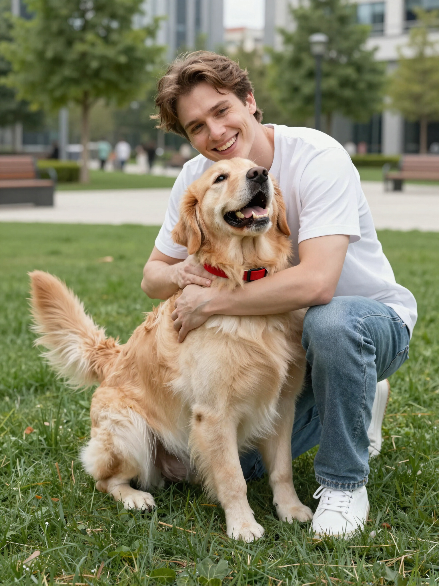

Our Mission
Protecting pets, connecting hearts
Kynkode helps reunite lost pets with their families through secure digital IDs and fast, verified owner contact. We bridge the gap between lost and found by providing a professional registration system designed for maximum pet security.
Expertise & Technology
Harnessing the power of advanced digital verification and secure cloud infrastructure to ensure your pet is never out of reach.
Pet Safety & Data
Security
Decades of experience in pet safety combined with state-of-the-art encryption to keep your pet's data protected and accessible.
Cloud-Based Platform
An always-on, modular infrastructure that ensures pet profiles are available to rescue teams 24/7, anywhere in the world.
Privacy-First Design
Strict privacy protocols designed specifically for veterinarians and owners, controlling secure access to critical contact data.

For Pet
Owners
Your Pet's Safety, Our
Priority
- Peace of mind with 24/7 global reunification support
- Simple, secure registration for all your pets' microchips
- Instant alerts to local rescue teams when your pet is found
- Secure digital profile accessible only to verified professionals
For
Veterinarians
Optimizing clinical workflows and supporting pet reunification.
- Instant Profile Access: Secure, immediate retrieval of medical alerts and reunification data during pet scans.
- Verified Contacts: Direct access to accurate, owner-verified contact details for faster response times.
- Smooth Follow-up: Digital records that streamline patient verification and post-reunification follow-up care.